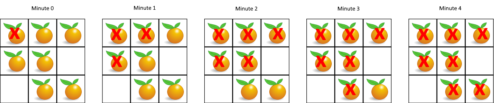

其它类型
中等
有 n 个房间，房间按从 0 到
n - 1 编号。最初，除 0
号房间外的其余所有房间都被锁住。你的目标是进入所有的房间。然而，你不能在没有获得钥匙的时候进入锁住的房间。
当你进入一个房间，你可能会在里面找到一套不同的钥匙，每把钥匙上都有对应的房间号，即表示钥匙可以打开的房间。你可以拿上所有钥匙去解锁其他房间。
给你一个数组 rooms 其中 rooms[i] 是你进入
i 号房间可以获得的钥匙集合。如果能进入
所有 房间返回 true，否则返回
false。
示例 1：
1 2 3 4 5 6 7 8 输入：rooms = [[1],[2],[3],[]] 输出：true 解释： 我们从 0 号房间开始，拿到钥匙 1。 之后我们去 1 号房间，拿到钥匙 2。 然后我们去 2 号房间，拿到钥匙 3。 最后我们去了 3 号房间。 由于我们能够进入每个房间，我们返回 true。
算法分析
DFS + 递归
我们从第0号房间开始递归，每拿到一把钥匙，就去这个钥匙对应的房间，这就是D的精髓。
1 2 3 4 5 6 7 8 9 10 11 12 13 14 15 16 17 18 19 20 21 22 23 24 25 26 27 28 29 30 class Solution { public boolean canVisitAllRooms (List<List<Integer>> rooms) { int n = rooms.size(); boolean [] visited = new boolean [n]; dfs(rooms, visited, 0 ); for (boolean visit: visited){ if (!visit){ return false ; } } return true ; } private void dfs (List<List<Integer>> rooms, boolean [] visited, int key) { if (visited[key]){ return ; } List<Integer> keys = rooms.get(key); visited[key] = true ; for (int k : keys){ dfs(rooms, visited, k); } } }
DFS
从边缘开始遍历，与边缘相连接的
1 2 3 4 5 6 7 8 9 10 11 12 13 14 15 16 17 18 19 20 21 22 23 24 25 26 27 28 29 30 31 32 33 34 35 36 37 38 39 40 41 42 43 44 45 46 47 48 class Solution { public void solve (char [][] board) { int r = board.length; int c = board[0 ].length; for (int i = 0 ; i < r; i++) { dfs(board, i, 0 ); dfs(board, i, c-1 ); } for (int i = 0 ; i < c; i++) { dfs(board, 0 , i); dfs(board, r-1 , i); } for (int i = 0 ; i < r; i++) { for (int j = 0 ; j < c; j++) { if (board[i][j] == 'A' ){ board[i][j] = 'O' ; }else if (board[i][j] == 'O' ){ board[i][j] = 'X' ; } } } } private void dfs (char [][] grid, int r, int c) { if (!inArea(grid, r, c) || grid[r][c] != 'O' ){ return ; } grid[r][c] = 'A' ; dfs(grid, r + 1 , c); dfs(grid, r - 1 , c); dfs(grid, r, c + 1 ); dfs(grid, r, c - 1 ); } private boolean inArea (char [][] grid, int r, int c) { return 0 <= r && r < grid.length && c >= 0 && c < grid[0 ].length; } }
n 座城市，从 0 到 n-1
编号，其间共有 n-1
条路线。因此，要想在两座不同城市之间旅行只有唯一一条路线可供选择（路线网形成一颗树）。去年，交通运输部决定重新规划路线，以改变交通拥堵的状况。
路线用 connections 表示，其中
connections[i] = [a, b] 表示从城市 a 到
b 的一条有向路线。
今年，城市 0 将会举办一场大型比赛，很多游客都想前往城市 0
。请你帮助重新规划路线方向，使每个城市都可以访问城市 0
。返回需要变更方向的最小路线数。
题目数据 保证
每个城市在重新规划路线方向后都能到达城市 0 。
建图+深搜DFS
题目得出的结论：
路线网形成一颗树：图是有路线连通的。
要求最少规划方案，运用贪心策略，把部分有向边反向一下，就能实现目的。
采用DFS或者BFS必须的元素：visited
小技巧：
反向路径在邻接表存负边值，这样从0正向推进的时候，只要>0就说明路径是从0正向推进的，需要反转这条路。
1 2 3 4 5 6 7 8 9 10 11 12 13 14 15 16 17 18 19 20 21 22 23 24 25 26 27 28 29 30 31 32 33 34 35 36 37 38 39 40 class Solution { int count = 0 ; public int minReorder (int n, int [][] connections) { List<List<Integer>> graph = buildGraph(n, connections); boolean [] visited = new boolean [n]; dfs(visited, graph, 0 ); return count; } public void dfs (boolean [] visited, List<List<Integer>> graph, int idx) { visited[idx] = true ; List<Integer> list = graph.get(idx); for (int neighbor : list){ if (!visited[Math.abs(neighbor)]){ if (neighbor > 0 ){ count++; } dfs(visited, graph, Math.abs(neighbor)); } } } public List<List<Integer>> buildGraph (int n, int [][] connections) { List<List<Integer>> graph = new ArrayList <>(); for (int i = 0 ; i < n; i++) { graph.add(new ArrayList <>()); } for (int [] connection : connections){ graph.get(connection[0 ]).add(connection[1 ]); graph.get(connection[1 ]).add(-connection[0 ]); } return graph; } }
给你一个变量对数组 equations 和一个实数值数组
values 作为已知条件，其中
equations[i] = [Ai, Bi] 和 values[i]
共同表示等式 Ai / Bi = values[i] 。每个 Ai 或
Bi 是一个表示单个变量的字符串。
另有一些以数组 queries 表示的问题，其中
queries[j] = [Cj, Dj] 表示第 j
个问题，请你根据已知条件找出 Cj / Dj = ?
的结果作为答案。
返回 所有问题的答案
。如果存在某个无法确定的答案，则用 -1.0
替代这个答案。如果问题中出现了给定的已知条件中没有出现的字符串，也需要用
-1.0 替代这个答案。
注意： 输入总是有效的。你可以假设除法运算中不会出现除数为
0 的情况，且不存在任何矛盾的结果。
注意： 未在等式列表中出现的变量是未定义的，因此无法确定它们的答案。
示例 1：
1 2 3 4 5 6 7 输入：equations = [["a","b"],["b","c"]], values = [2.0,3.0], queries = [["a","c"],["b","a"],["a","e"],["a","a"],["x","x"]] 输出：[6.00000,0.50000,-1.00000,1.00000,-1.00000] 解释： 条件：a / b = 2.0, b / c = 3.0 问题：a / c = ?, b / a = ?, a / e = ?, a / a = ?, x / x = ? 结果：[6.0, 0.5, -1.0, 1.0, -1.0 ] 注意：x 是未定义的 => -1.0
提示：
1 <= equations.length <= 20equations[i].length == 21 <= Ai.length, Bi.length <= 5values.length == equations.length0.0 < values[i] <= 20.01 <= queries.length <= 20queries[i].length == 21 <= Cj.length, Dj.length <= 5Ai, Bi, Cj, Dj 由小写英文字母与数字组成
建图 + DFS
如何建图：
image-20230903084528732
边的权值 = 起始边/终止边的值。
如图：边是可以出现反向的情况。
有向边虽然是a -> b，但是b -> a也成立，结果就是0.5
用Java的Map建图：
Map< 分子顶点，<分母顶点， 计算结果>>
1 2 3 4 5 6 7 8 9 10 11 Map<String, List<Cell>> graph = new HashMap <>(); for (int i = 0 ; i < values.length; i++){ String s1 = equations.get(i).get(0 ), s2 = equations.get(i).get(1 ); graph.computeIfAbsent(s1, k -> new ArrayList <>()).add(new Cell (s2, values[i])); graph.computeIfAbsent(s2, k -> new ArrayList <>()).add(new Cell (s1, 1.0 / values[i])); }
边的定义：
1 2 3 4 5 6 7 8 9 10 11 class Cell { String str; double div; Cell(String str, double div) { this .str = str; this .div = div; } }
结果集构建：
1 2 3 4 5 6 7 8 9 10 double [] res = new double [queries.size()];Arrays.fill(res, -1.0 ); for (int i = 0 ; i < queries.size(); i++) { dfs(queries.get(i).get(0 ), queries.get(i).get(1 ), 1.0 , graph, res, i, new HashSet <>()); } return res;
DFS函数：
1 2 3 4 5 6 7 8 9 10 11 12 13 14 15 16 17 18 19 20 21 private void dfs (String src, String dst, double cur, Map<String, List<Cell>> graph, double [] res, int index, Set<String> visited) { if (!visited.add(src)) { return ; } if (src.equals(dst) && graph.containsKey(src)) { res[index] = cur; return ; } for (Cell nei : graph.getOrDefault(src, new ArrayList <>())) { dfs(nei.str, dst, cur * nei.div, graph, res, index, visited); } }
给你无向 连通 深拷贝
图中的每个节点都包含它的值 val（int）
和其邻居的列表（list[Node]）。
1 2 3 4 class Node { public int val; public List<Node> neighbors; }
测试用例格式：
简单起见，每个节点的值都和它的索引相同。例如，第一个节点值为
1（val = 1），第二个节点值为
2（val = 2），以此类推。该图在测试用例中使用邻接列表表示。
邻接列表
是用于表示有限图的无序列表的集合。每个列表都描述了图中节点的邻居集。
给定节点将始终是图中的第一个节点（值为 1）。你必须将
给定节点的拷贝 作为对克隆图的引用返回。
示例 1：
img
1 2 3 4 5 6 7 8 输入：adjList = [[2,4],[1,3],[2,4],[1,3]] 输出：[[2,4],[1,3],[2,4],[1,3]] 解释： 图中有 4 个节点。 节点 1 的值是 1，它有两个邻居：节点 2 和 4 。 节点 2 的值是 2，它有两个邻居：节点 1 和 3 。 节点 3 的值是 3，它有两个邻居：节点 2 和 4 。 节点 4 的值是 4，它有两个邻居：节点 1 和 3 。
示例 2：
img
1 2 3 输入：adjList = [[]] 输出：[[]] 解释：输入包含一个空列表。该图仅仅只有一个值为 1 的节点，它没有任何邻居。
示例 3：
1 2 3 输入：adjList = [] 输出：[] 解释：这个图是空的，它不含任何节点。
示例 4：
img
1 2 输入：adjList = [[2],[1]] 输出：[[2],[1]]
DFS +递归
1 2 3 4 5 6 7 8 9 10 11 12 13 14 15 16 17 18 19 20 21 22 class Solution { Map<Node, Node> map = new HashMap <>(); public Node cloneGraph (Node node) { if (node == null ){ return null ; } if (map.containsKey(node)){ return map.get(node); } Node clone = new Node (node.val, new ArrayList <>()); map.put(node, clone); for (Node neighbor : node.neighbors){ clone.neighbors.add(cloneGraph(neighbor)); } return clone; } }
截取评论的一句话：
课本上总说deep copy和shallow
copy，似懂非懂的，不觉得这东西有什么用。慢慢地，发现deep
copy背后隐藏的逻辑其实是一种对象图（Object
Graph）的遍历行为——这东西广泛出现在各语言的垃圾回收、序列化机制里。内存里各个对象存储空间中放置的引用域/指针就好像有向图里一条边，你沿着它去到达内存中的每个角落、去到当前对象所有的关联对象。题设里的neibours就像一道开胃菜，它可以是其他collection、甚至object，学会这个deep
copy，你也就学会了GC里的可达性分析、你也就学会了如何把RAM中的数据固化到硬盘里。
深度优先搜索
岛屿问题
岛屿问题也是经典的网格问题 ，网格遍历相当于四叉树遍历
DFS模板：
1 2 3 4 5 6 7 8 9 10 11 12 13 14 15 16 17 18 19 20 21 22 private void dfs (<T>[][] grid, int r, int c) { if (!inArea(grid, r, c)){ return ; } if (...){ } dfs(grid, r + 1 , c); dfs(grid, r - 1 , c); dfs(grid, r, c + 1 ); dfs(grid, r, c - 1 ); } private boolean inArea (<T>[][] grid, int r, int c) { return 0 <= r && r < grid.length && c >= 0 && c < grid[0 ].length; }
给你一个由 '1'（陆地）和
'0'（水）组成的的二维网格，请你计算网格中岛屿的数量。
岛屿总是被水包围，并且每座岛屿只能由水平方向和/或竖直方向上相邻的陆地连接形成。
此外，你可以假设该网格的四条边均被水包围。
示例 1：
1 2 3 4 5 6 7 输入：grid = [ ["1","1","1","1","0"], ["1","1","0","1","0"], ["1","1","0","0","0"], ["0","0","0","0","0"] ] 输出：1
示例 2：
1 2 3 4 5 6 7 输入：grid = [ ["1","1","0","0","0"], ["1","1","0","0","0"], ["0","0","1","0","0"], ["0","0","0","1","1"] ] 输出：3
DFS + 循环遍历
1 2 3 4 5 6 7 8 9 10 11 12 13 14 15 16 17 18 19 20 21 22 23 24 25 26 27 28 29 30 31 32 33 34 35 class Solution { public int numIslands (char [][] grid) { int ans = 0 ; for (int i = 0 ; i < grid.length; i++) { for (int j = 0 ; j < grid[0 ].length; j++) { if (grid[i][j] == '1' ){ dfs(grid, i, j); ans++; } } } return ans; } private void dfs (char [][] grid, int r, int c) { if (!inArea(grid, r, c)){ return ; } if (grid[r][c] != '1' ){ return ; } grid[r][c] = '2' ; dfs(grid, r + 1 , c); dfs(grid, r - 1 , c); dfs(grid, r, c + 1 ); dfs(grid, r, c - 1 ); } private boolean inArea (char [][] grid, int r, int c) { return 0 <= r && r < grid.length && c >= 0 && c < grid[0 ].length; } }
广度优先搜索
优先宽度遍历。
代码实现必备要素：
迭代模式
辅助队列
visited表（可以以另一种形式，只要保证知道某个元素被访问过即可）
网格模型题目
网格模型总结
基本上都是上下左右四个方向遍历，重点在于对队列的使用，队列可存二元组、三元组这样，灵活取舍。
1 2 3 4 5 6 7 8 9 10 11 12 13 14 15 16 17 18 19 20 21 22 23 24 25 26 27 28 29 30 31 32 33 34 35 36 37 38 39 40 41 42 43 44 45 46 47 48 49 50 51 52 class Solution { public int BFS (char [][] graph, ...) { int m = graph.length; int n = graph[0 ].length; Queue<int []> queue = new LinkedList <>(); queue.offer(new int []{ n元组 }); ... while (!queue.isEmpty()){ int [] poll = queue.poll(); int x = poll[0 ]; int y = poll[1 ]; ... if (x - 1 >= 0 && ...){ queue.offer(new int []{ n元组 }); ... } if (x + 1 < m && ...){ queue.offer(new int []{ n元组 }); ... } if (y - 1 >= 0 && ...){ queue.offer(new int []{ n元组 }); ... } if (y + 1 < n && ...){ queue.offer(new int []{ n元组 }); ... } if (...){ res.add(); } } return res; } }
在给定的 m x n 网格 grid
中，每个单元格可以有以下三个值之一：
值 0 代表空单元格；
值 1 代表新鲜橘子；
值 2 代表腐烂的橘子。
每分钟，腐烂的橘子 周围 4 个方向上相邻
的新鲜橘子都会腐烂。
返回
直到单元格中没有新鲜橘子为止所必须经过的最小分钟数。如果不可能，返回
-1 。
示例 1：

img
1 2 输入：grid = [[2,1,1],[1,1,0],[0,1,1]] 输出：4
广搜——方格遍历
注意：
广搜的队列初始化。
广搜队列存的值要有意义，比如本题中存下标，可以方便后续进行上下左右的遍历。
网格搜索会有上下左右四个方向。
注意本题，每一轮循环是每一分钟，每一分钟腐烂的橘子可以同时感染，所以需要嵌套循环。
1 2 3 4 5 6 7 8 9 10 11 12 13 14 15 16 17 18 19 20 21 22 23 24 25 26 27 28 29 30 31 32 33 34 35 36 37 38 39 40 41 42 43 44 45 46 47 48 49 50 51 52 53 54 55 56 57 58 59 60 61 class Solution { public int orangesRotting (int [][] grid) { int count = 0 ; int min = 0 ; int m = grid.length; int n = grid[0 ].length; Queue<int []> queue = new LinkedList <>(); for (int i = 0 ; i < m; i++){ for (int j = 0 ; j < n; j++){ if (grid[i][j] == 1 ){ count++; } if (grid[i][j] == 2 ){ queue.offer(new int []{i,j}); } } } while (count > 0 && !queue.isEmpty()){ int size = queue.size(); for (int i = 0 ; i < size; i++){ int [] xy = queue.poll(); int x = xy[0 ]; int y = xy[1 ]; if (x-1 >= 0 && grid[x-1 ][y] == 1 ){ grid[x-1 ][y] = 2 ; queue.offer(new int []{x-1 ,y}); count--; } if (x+1 < m && grid[x+1 ][y] == 1 ){ grid[x+1 ][y] = 2 ; queue.offer(new int []{x+1 ,y}); count--; } if (y-1 >= 0 && grid[x][y-1 ] == 1 ){ grid[x][y-1 ] = 2 ; queue.offer(new int []{x,y-1 }); count--; } if (y+1 < n && grid[x][y+1 ] == 1 ){ grid[x][y+1 ] = 2 ; queue.offer(new int []{x,y+1 }); count--; } } min++; } if (count <= 0 ){ return min; } return -1 ; } }
给你一个 m x n 的迷宫矩阵 maze
（下标从 0 开始 ），矩阵中有空格子（用 '.'
表示）和墙（用 '+' 表示）。同时给你迷宫的入口
entrance ，用
entrance = [entrancerow, entrancecol]
表示你一开始所在格子的行和列。
每一步操作，你可以往
上 ，下 ，左 或者
右
移动一个格子。你不能进入墙所在的格子，你也不能离开迷宫。你的目标是找到离
entrance 最近
的出口。出口 的含义是 maze
边界 上的
空格子 。entrance 格子
不算 出口。
请你返回从 entrance 到最近出口的最短路径的
步数 ，如果不存在这样的路径，请你返回 -1
。
示例 1：
img
1 2 3 4 5 6 7 8 输入：maze = [["+","+",".","+"],[".",".",".","+"],["+","+","+","."]], entrance = [1,2] 输出：1 解释：总共有 3 个出口，分别位于 (1,0)，(0,2) 和 (2,3) 。 一开始，你在入口格子 (1,2) 处。 - 你可以往左移动 2 步到达 (1,0) 。 - 你可以往上移动 1 步到达 (0,2) 。 从入口处没法到达 (2,3) 。 所以，最近的出口是 (0,2) ，距离为 1 步。
广搜 + 距离判断最短
1 2 3 4 5 6 7 8 9 10 11 12 13 14 15 16 17 18 19 20 21 22 23 24 25 26 27 28 29 30 31 32 33 34 35 36 37 38 39 40 41 42 43 44 45 46 47 48 49 class Solution { public int nearestExit (char [][] maze, int [] entrance) { int m = maze.length; int n = maze[0 ].length; Queue<int []> queue = new LinkedList <>(); queue.offer(new int []{entrance[0 ], entrance[1 ], 0 }); maze[entrance[0 ]][entrance[1 ]] = '+' ; int min = Integer.MAX_VALUE; while (!queue.isEmpty()){ int [] poll = queue.poll(); int x = poll[0 ]; int y = poll[1 ]; int d = poll[2 ]; if (x - 1 >= 0 && maze[x-1 ][y] != '+' ){ queue.offer(new int []{x-1 , y, d + 1 }); maze[x-1 ][y] = '+' ; } if (x + 1 < m && maze[x+1 ][y] != '+' ){ queue.offer(new int []{x+1 , y, d + 1 }); maze[x+1 ][y] = '+' ; } if (y - 1 >= 0 && maze[x][y-1 ] != '+' ){ queue.offer(new int []{x, y-1 , d + 1 }); maze[x][y-1 ] = '+' ; } if (y + 1 < n && maze[x][y+1 ] != '+' ){ queue.offer(new int []{x, y+1 , d + 1 }); maze[x][y+1 ] = '+' ; } if ((x == 0 || x == m-1 || y == 0 || y == n-1 ) && !(x == entrance[0 ] && y == entrance[1 ])){ min = Math.min(min, d); } } return min == Integer.MAX_VALUE? -1 :min; } }
特殊
给你一个大小为 n x n 的整数矩阵 board
，方格按从 1 到 n2 编号，编号遵循 转行交替方式
，从左下角开始 （即，从 board[n - 1][0]
开始）每一行交替方向。
玩家从棋盘上的方格 1
（总是在最后一行、第一列）开始出发。
每一回合，玩家需要从当前方格 curr
开始出发，按下述要求前进：
r 行 c
列的棋盘，按前述方法编号，棋盘格中可能存在 “蛇” 或 “梯子”；如果
board[r][c] != -1，那个蛇或梯子的目的地将会是
board[r][c]。编号为 1 和 n2
的方格上没有蛇或梯子。
注意，玩家在每回合的前进过程中最多只能爬过蛇或梯子一次：就算目的地是另一条蛇或梯子的起点，玩家也
不能 继续移动。
举个例子，假设棋盘是 [[-1,4],[-1,3]]
，第一次移动，玩家的目标方格是 2
。那么这个玩家将会顺着梯子到达方格 3 ，但
不能 顺着方格 3 上的梯子前往方格
4 。
返回达到编号为 n2
的方格所需的最少移动次数，如果不可能，则返回 -1。
示例 1：
img
1 2 3 4 5 6 7 8 9 输入：board = [[-1,-1,-1,-1,-1,-1],[-1,-1,-1,-1,-1,-1],[-1,-1,-1,-1,-1,-1],[-1,35,-1,-1,13,-1],[-1,-1,-1,-1,-1,-1],[-1,15,-1,-1,-1,-1]] 输出：4 解释： 首先，从方格 1 [第 5 行，第 0 列] 开始。 先决定移动到方格 2 ，并必须爬过梯子移动到到方格 15 。 然后决定移动到方格 17 [第 3 行，第 4 列]，必须爬过蛇到方格 13 。 接着决定移动到方格 14 ，且必须通过梯子移动到方格 35 。 最后决定移动到方格 36 , 游戏结束。 可以证明需要至少 4 次移动才能到达最后一个方格，所以答案是 4 。
示例 2：
1 2 输入：board = [[-1,-1],[-1,3]] 输出：1
BFS寻路
核心寻路逻辑在于第二层for循环。
1 2 3 4 5 6 7 8 9 10 11 12 13 14 15 16 17 18 19 20 21 22 23 24 25 26 27 28 29 30 31 32 33 34 35 36 37 38 39 40 41 42 43 44 45 46 47 48 49 50 51 class Solution { public int snakesAndLadders (int [][] board) { int n = board.length; boolean [] vis = new boolean [n * n + 1 ]; Queue<int []> queue = new LinkedList <>(); queue.add(new int []{1 , 0 }); while (!queue.isEmpty()){ int [] poll = queue.poll(); for (int i = 1 ; i <= 6 ; i++) { int next = poll[0 ] + i; if (next > n * n){ break ; } int [] rc = id2rc(next, n); if (board[rc[0 ]][rc[1 ]] > 0 ){ next = board[rc[0 ]][rc[1 ]]; } if (next == n * n){ return poll[1 ] + 1 ; } if (!vis[next]){ vis[next] = true ; queue.offer(new int []{next, poll[1 ] + 1 }); } } } return -1 ; } private int [] id2rc(int id, int n){ int t = (id - 1 ) / n; int r = n - t - 1 ; int c = (id - 1 ) % n; if (t % 2 == 1 ){ c = n - c - 1 ; } return new int []{r, c}; } }
字符串转化类型
题目描述：给定start和end字符串，要求从start ->
end，且必须经过中间数组wordList。
基因序列可以表示为一条由 8 个字符组成的字符串，其中每个字符都是
'A'、'C'、'G' 和 'T'
之一。
假设我们需要调查从基因序列 start 变为 end
所发生的基因变化。一次基因变化就意味着这个基因序列中的一个字符发生了变化。
例如，"AACCGGTT" --> "AACCGGTA"
就是一次基因变化。
另有一个基因库 bank
记录了所有有效的基因变化，只有基因库中的基因才是有效的基因序列。（变化后的基因必须位于基因库
bank 中）
给你两个基因序列 start 和 end
，以及一个基因库 bank ，请你找出并返回能够使
start 变化为 end
所需的最少变化次数。如果无法完成此基因变化，返回 -1 。
注意：起始基因序列 start
默认是有效的，但是它并不一定会出现在基因库中。
示例 1：
1 2 输入：start = "AACCGGTT", end = "AACCGGTA", bank = ["AACCGGTA"] 输出：1
示例 2：
1 2 输入：start = "AACCGGTT", end = "AAACGGTA", bank = ["AACCGGTA","AACCGCTA","AAACGGTA"] 输出：2
示例 3：
1 2 输入：start = "AAAAACCC", end = "AACCCCCC", bank = ["AAAACCCC","AAACCCCC","AACCCCCC"] 输出：3
BFS + 哈希表
哈希表作用：对bank元素去重，顺带判断后续新加的结点是否在bank中。
1 2 3 4 5 6 7 8 9 10 11 12 13 14 15 16 17 18 19 20 21 22 23 24 25 26 27 28 29 30 31 32 33 34 35 36 37 38 39 40 41 42 43 44 45 46 47 48 49 50 51 class Solution { public int minMutation (String startGene, String endGene, String[] bank) { HashSet<String> cnt = new HashSet <>(); HashSet<String> vis = new HashSet <>(); for (String s : bank) { cnt.add(s); } if (!cnt.contains(endGene)){ return -1 ; } if (startGene.equals(endGene)){ return 0 ; } char [] keys = {'A' , 'C' , 'G' , 'T' }; Queue<String> queue = new LinkedList <>(); queue.add(startGene); vis.add(startGene); int ans = 1 ; while (!queue.isEmpty()){ int size = queue.size(); for (int i = 0 ; i < size; i++) { String poll = queue.poll(); for (int j = 0 ; j < 8 ; j++) { for (int k = 0 ; k < 4 ; k++) { if (keys[k] != poll.charAt(j)){ StringBuilder sb = new StringBuilder (poll); sb.setCharAt(j,keys[k]); String next = sb.toString(); if (!vis.contains(next) && cnt.contains(next)){ if (next.equals(endGene)){ return ans; } queue.offer(next); vis.add(next); } } } } } ans++; } return -1 ; } }
字典 wordList 中从单词 beginWord 和
endWord 的 转换序列
是一个按下述规格形成的序列
beginWord -> s1 -> s2 -> ... -> sk：
每一对相邻的单词只差一个字母。
对于 1 <= i <= k 时，每个 si 都在
wordList 中。注意， beginWord 不需要在
wordList 中。
sk == endWord
给你两个单词 beginWord 和 endWord
和一个字典 wordList ，返回 从 beginWord 到
endWord 的 最短转换序列 中的
单词数目 。如果不存在这样的转换序列，返回
0 。
示例 1：
1 2 3 输入：beginWord = "hit", endWord = "cog", wordList = ["hot","dot","dog","lot","log","cog"] 输出：5 解释：一个最短转换序列是 "hit" -> "hot" -> "dot" -> "dog" -> "cog", 返回它的长度 5。
示例 2：
1 2 3 输入：beginWord = "hit", endWord = "cog", wordList = ["hot","dot","dog","lot","log"] 输出：0 解释：endWord "cog" 不在字典中，所以无法进行转换。
优化建图+BFS
建图过程 状态推进思想： 创建虚拟节点。对于单词
hit，我们创建三个虚拟节点 *it、h*t、hi*，并让 hit
向这三个虚拟节点分别连一条边即可。如果一个单词能够转化为
hit，那么该单词必然会连接到这三个虚拟节点之一。对于每一个单词，我们枚举它连接到的虚拟节点，把该单词对应的
id 与这些虚拟节点对应的 id 相连即可。
示例一：
中间过程走了8步，根据建图规律，符合题意的话，就是 8 /
2走了四步，算上开头的一步，正好五步
代码：
1 2 3 4 5 6 7 8 9 10 11 12 13 14 15 16 17 18 19 20 21 22 23 24 25 26 27 28 29 30 31 32 33 34 35 36 private void addEdge (String word) { addWord(word); Integer id = wordId.get(word); char [] chars = word.toCharArray(); int length = word.length(); for (int i = 0 ; i < length; i++) { char tmp = chars[i]; chars[i] = '*' ; String newWord = new String (chars); addWord(newWord); Integer id1 = wordId.get(newWord); edges.get(id).add(id1); edges.get(id1).add(id); chars[i] = tmp; } } private void addWord (String word) { if (!wordId.containsKey(word)){ wordId.put(word, nodeNum++); edges.add(new ArrayList <Integer>()); } } public int ladderLength (String beginWord, String endWord, List<String> wordList) { addEdge(beginWord); for (String s : wordList) { addEdge(s); } if (!wordId.containsKey(endWord)){ return 0 ; } }
BFS
1 2 3 4 5 6 7 8 9 10 11 12 13 14 15 16 17 18 19 20 21 22 23 24 25 26 27 28 29 30 31 32 33 34 35 36 37 38 Map<String, Integer> wordId = new HashMap <>(); List<List<Integer>> edges = new ArrayList <>(); int nodeNum = 0 ;public int ladderLength (String beginWord, String endWord, List<String> wordList) { addEdge(beginWord); for (String s : wordList) { addEdge(s); } if (!wordId.containsKey(endWord)){ return 0 ; } int [] dit = new int [nodeNum]; Arrays.fill(dit, -1 ); dit[0 ] = 0 ; int beginId = wordId.get(beginWord), endId = wordId.get(endWord); Queue<Integer> queue = new LinkedList <>(); queue.offer(beginId); while (!queue.isEmpty()){ Integer x = queue.poll(); if (x == endId){ return dit[x] / 2 + 1 ; } for (Integer id : edges.get(x)) { if (dit[id] == -1 ){ dit[id] = dit[x] + 1 ; queue.offer(id); } } } return 0 ; }
并查集
有 n 个城市，其中一些彼此相连，另一些没有相连。如果城市
a 与城市 b 直接相连，且城市 b
与城市 c 直接相连，那么城市 a 与城市
c 间接相连。
省份
是一组直接或间接相连的城市，组内不含其他没有相连的城市。
给你一个 n x n 的矩阵 isConnected ，其中
isConnected[i][j] = 1 表示第 i 个城市和第
j 个城市直接相连，而 isConnected[i][j] = 0
表示二者不直接相连。
返回矩阵中 省份 的数量。
示例 1：
img
1 2 输入：isConnected = [[1,1,0],[1,1,0],[0,0,1]] 输出：2
等级制 + 路径压缩优化并查集
1 2 3 4 5 6 7 8 9 10 11 12 13 14 15 16 17 18 19 20 21 22 23 24 25 26 27 28 29 30 31 32 33 34 35 36 37 38 39 40 41 42 43 44 45 46 47 48 49 50 51 52 53 54 55 56 57 58 59 60 61 62 63 64 65 66 class Solution { public int findCircleNum (int [][] isConnected) { int n = isConnected.length; DisjointSet disjointSet = new DisjointSet (n); for (int i = 0 ; i < n; i++){ for (int j = 0 ; j < n; j++){ if (i != j && isConnected[i][j] == 1 ){ disjointSet.union(i, j); } } } return disjointSet.unionNums(); } } public class DisjointSet { int [] s; int [] size; int count; Set<Integer> set = new HashSet <Integer>(); public DisjointSet (int size) { s = new int [size]; this .size = new int [size]; for (int i = 0 ; i < size; i++){ s[i] = i; this .size[i] = 1 ; } count = size; } public int find (int x) { if (x == s[x]){ return x; } return s[x] = find(s[x]); } public void union (int x, int y) { int ldx = find(x); int ldy = find(y); if (ldx != ldy){ if (this .size[ldx] < this .size[ldy]){ s[ldx] = ldy; }else if (this .size[ldx] > this .size[ldy]){ s[ldy] = ldx; }else { s[ldy] = ldx; this .size[ldx]++; } count--; } } public int unionNums () { return count; } }
树可以看成是一个连通且 无环 的 无向
图。
给定往一棵 n 个节点 (节点值 1～n)
的树中添加一条边后的图。添加的边的两个顶点包含在 1 到
n
中间，且这条附加的边不属于树中已存在的边。图的信息记录于长度为
n 的二维数组 edges
，edges[i] = [ai, bi] 表示图中在 ai 和
bi 之间存在一条边。
请找出一条可以删去的边，删除后可使得剩余部分是一个有着 n
个节点的树。如果有多个答案，则返回数组 edges
中最后出现的那个。
示例 1：
img
1 2 输入: edges = [[1,2], [1,3], [2,3]] 输出: [2,3]
示例 2：
img
1 2 输入: edges = [[1,2], [2,3], [3,4], [1,4], [1,5]] 输出: [1,4]
提示:
n == edges.length3 <= n <= 1000edges[i].length == 21 <= ai < bi <= edges.lengthai != biedges 中无重复元素给定的图是连通的
算法分析
并查集（无优化）
通过并查集寻找附加的边 。初始时，每个节点都属于不同的连通分量。遍历每一条边，判断这条边连接的两个顶点是否属于相同的连通分量。（其实就是找构成环的那一条边，找到了就返回即可，从前往后遍历，根据题意，会返回靠后的边）
1 2 3 4 5 6 7 8 9 10 11 12 13 14 15 16 17 18 19 20 21 22 23 24 25 26 27 28 29 30 31 class Solution { public int [] findRedundantConnection(int [][] edges) { int n = edges.length; int [] parent = new int [n + 1 ]; for (int i = 1 ; i <= n; i++) { parent[i] = i; } for (int [] edge : edges) { int x = edge[0 ], y = edge[1 ]; if (find(parent, x) != find(parent, y)) { union(parent, x, y); } else { return edge; } } return new int [0 ]; } public void union (int [] parent, int x, int y) { parent[find(parent, x)] = find(parent, y); } public int find (int [] parent, int x) { if (parent[x] != x) { parent[x] = find(parent, parent[x]); } return parent[x]; } }
拓扑排序
课程表问题
你这个学期必须选修 numCourses 门课程，记为
0 到 numCourses - 1 。
在选修某些课程之前需要一些先修课程。 先修课程按数组
prerequisites 给出，其中
prerequisites[i] = [ai, bi] ，表示如果要学习课程
ai 则 必须 先学习课程 bi
。
例如，先修课程对 [0, 1] 表示：想要学习课程
0 ，你需要先完成课程 1 。
请你判断是否可能完成所有课程的学习？如果可以，返回 true
；否则，返回 false 。
示例 1：
1 2 3 输入：numCourses = 2, prerequisites = [[1,0]] 输出：true 解释：总共有 2 门课程。学习课程 1 之前，你需要完成课程 0 。这是可能的。
示例 2：
1 2 3 输入：numCourses = 2, prerequisites = [[1,0],[0,1]] 输出：false 解释：总共有 2 门课程。学习课程 1 之前，你需要先完成课程 0 ；并且学习课程 0 之前，你还应先完成课程 1 。这是不可能的。
提示：
1 <= numCourses <= 20000 <= prerequisites.length <= 5000prerequisites[i].length == 20 <= ai, bi < numCoursesprerequisites[i] 中的所有课程对
互不相同
拓扑排序（邻接表 + 入度表 +
BFS）
1 2 3 4 5 6 7 8 9 10 11 12 13 14 15 16 17 18 19 20 21 22 23 24 25 26 27 28 29 30 31 32 33 34 class Solution { public boolean canFinish (int numCourses, int [][] prerequisites) { int [] indegrees = new int [numCourses]; Queue<Integer> queue = new LinkedList <>(); List<List<Integer>> adjacency = new ArrayList <>(); for (int i = 0 ; i < numCourses; i++) { adjacency.add(new ArrayList <>()); } for (int [] prerequisite : prerequisites) { indegrees[prerequisite[0 ]]++; adjacency.get(prerequisite[1 ]).add(prerequisite[0 ]); } for (int i = 0 ; i < numCourses; i++) { if (indegrees[i] == 0 ) queue.add(i); } while (!queue.isEmpty()){ Integer poll = queue.poll(); numCourses--; for (Integer i : adjacency.get(poll)) { indegrees[i]--; if (indegrees[i] == 0 ){ queue.add(i); } } } return numCourses == 0 ; } }
现在你总共有 numCourses 门课需要选，记为 0
到 numCourses - 1。给你一个数组 prerequisites
，其中 prerequisites[i] = [ai, bi] ，表示在选修课程
ai 前 必须 先选修 bi 。
例如，想要学习课程 0 ，你需要先完成课程 1
，我们用一个匹配来表示：[0,1] 。
返回你为了学完所有课程所安排的学习顺序。可能会有多个正确的顺序，你只要返回
任意一种 就可以了。如果不可能完成所有课程，返回
一个空数组 。
示例 1：
1 2 3 输入：numCourses = 2, prerequisites = [[1,0]] 输出：[0,1] 解释：总共有 2 门课程。要学习课程 1，你需要先完成课程 0。因此，正确的课程顺序为 [0,1] 。
示例 2：
1 2 3 4 输入：numCourses = 4, prerequisites = [[1,0],[2,0],[3,1],[3,2]] 输出：[0,2,1,3] 解释：总共有 4 门课程。要学习课程 3，你应该先完成课程 1 和课程 2。并且课程 1 和课程 2 都应该排在课程 0 之后。 因此，一个正确的课程顺序是 [0,1,2,3] 。另一个正确的排序是 [0,2,1,3] 。
示例 3：
1 2 输入：numCourses = 1, prerequisites = [] 输出：[0]
提示：
1 <= numCourses <= 20000 <= prerequisites.length <= numCourses * (numCourses - 1)prerequisites[i].length == 20 <= ai, bi < numCoursesai != bi所有[ai, bi] 互不相同
拓扑排序（邻接表 + 入度表 +
BFS）
1 2 3 4 5 6 7 8 9 10 11 12 13 14 15 16 17 18 19 20 21 22 23 24 25 26 27 28 29 30 31 32 33 34 35 36 37 38 39 40 class Solution { public int [] findOrder(int numCourses, int [][] prerequisites) { int [] res = new int [numCourses]; int [] indegrees = new int [numCourses]; Queue<Integer> queue = new LinkedList <>(); List<List<Integer>> adjacency = new ArrayList <>(); for (int i = 0 ; i < numCourses; i++) { adjacency.add(new ArrayList <>()); } for (int [] prerequisite : prerequisites) { indegrees[prerequisite[0 ]]++; adjacency.get(prerequisite[1 ]).add(prerequisite[0 ]); } for (int i = 0 ; i < numCourses; i++) { if (indegrees[i] == 0 ) queue.add(i); } int j = 0 ; while (!queue.isEmpty()){ Integer poll = queue.poll(); numCourses--; res[j] = poll; j++; for (Integer i : adjacency.get(poll)) { indegrees[i]--; if (indegrees[i] == 0 ){ queue.add(i); } } } return numCourses == 0 ?res : new int [0 ]; } }